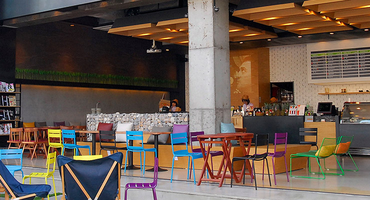

카페 소개
"휴롬주스카페에서 전문가가 전하는 건강한 자연을 체험하세요."
-
- 위대한 자연, 휴롬이 찾은 건강의 해답입니다.
- 자연은 스스로를 치유하는 생명력과 질서를 가지고 있습니다.
우리가 자연을 가까이 해야 하는 이유는 자연은 외부로부터 스스로를
방어하고 재생해 내는 능력을 통해 생태계가 유지되고 인류도 그 안에서
건강하게 살아갈 수 있기 때문입니다. 그리고 건강한 자연이
우리의 먹거리가 되어야 합니다.
-
- 인류의 건강을 위한 휴롬의 끊임없는
연구결과가 바로 휴롬주스입니다. - 휴롬은 40년 이상 인류의 건강함을 위한 연구를 거듭하여, 자연의 영양을
그대로 담을 수 있는 휴롬의 독자적인 착즙 기술을 개발 하였습니다.
자연 본연의 먹거리를 가장 건강하고 효과적으로 섭취 할 수 있는 휴롬주스는
오랫 동안 건강 주스만을 연구한 휴롬의 노력의 결정체 입니다.
- 인류의 건강을 위한 휴롬의 끊임없는
-
- 휴롬주스카페에서 올바른 식습관을
체험할 수 있습니다. - 휴롬주스카페는 (주)휴롬의 이념인 앞선 착즙 기술을 바탕으로한
모두가 건강한 세상의 학습과 체험의 공간으로 기획되었습니다. 채소·과일에
대한 전문가의 도움을 받고 몸소 체험하며 자연의 위대함을 경험하는 곳
바로 휴롬주스카페입니다.
- 휴롬주스카페에서 올바른 식습관을
-
- 휴롬주스카페는 건강합니다.
- 올바른 식습관이 건강의 가장 기본적인 조건이며, 이것은 신선한
채소·과일을 매일같이 골고루 그리고 충분히 섭취하는 것을 의미합니다.
천연의 영양소가 풍부한 신선한 채소 과일을 갓 짜낸 휴롬주스가 이러한
건강의 해답이기 때문에 보다 더 많은 분들이 휴롬주스를 통해
몸도 마음도 건강해지는 공간으로 운영되고 있습니다.
-
- 휴롬주스카페는 특별합니다.
- 여러분의 건강한 생활 습관의 지렛대가 되고자 합니다. 이를 위해 R&D센터를
비롯 휴롬이 검증한 주스 전문가 파이토스 그리고 영양사까지 더 많은
전문가들이 투입되고 맞춤 서비스를 제공합니다. 내 몸이 필요로 하는
채소·과일의 올바른 정보와 휴롬주스 그리고 휴롬주스기까지 건강에 관한
모든 것을 휴롬주스카페에서 만나실 수 있습니다.
-
- 휴롬주스카페는 언제나 귀 기울여 듣습니다.
- 휴롬주스카페는 휴롬이 고객과 만나는 대표적인 공간입니다. 고객의 소리에
더 귀 기울여 고객과 함께 성장해 나가는 휴롬주스 카페가 되겠습니다.
카페 특징
건강을 생각하는 휴롬주스카페는 특별합니다.
- 자연의 신선한 채소·과일로 건강한 식습관을 위해
체험하고 학습하는 휴롬주스카페 입니다. - 휴롬주스카페는 오직 당신의 건강만을 생각합니다.
휴롬주스카페는 당신의 건강을 오직 자연 안에서만 찾고자 노력합니다.
합성비타민에 익숙한 세상, 신선한 채소·과일의 천연 영양소를 드립니다.
인스턴트 문화에 익숙한 현대인에게 천천히 건강하게 사는 법을 알려드립니다.
- 자연만을 담은 휴롬주스는 정직합니다.
- 휴롬주스에는 오직 살아있는 채소·과일만 들어갑니다.
- 물, 얼음, 설탕 등의 첨가물 없이 저속 착즙 방식으로 지그시 눌러 짜
껍질과 씨앗의 영양까지 살아있는 주스입니다. - 열을 가하거나 칼날을 이용해 갈지 않은 신선한 채소·과일을 자연 그대로
짜낸 맛과 영양이 살아있는 주스 입니다. 건강에 좋은 채소 함유량이 높은
맛있는 건강 주스입니다. - 가공하지 않습니다. 신선한 채소·과일만 즉석에서 지그시 눌러 짠
과즙만 100% 담았습니다.
휴롬주스카페의 특별함은 자연과 건강만을 연구하는
휴롬의 전문가들이 만들어갑니다.
-
- 휴롬 바이오 식품 연구소
- 휴롬 바이오 식품 연구소의 채소, 과일 전문가들은 끊임없는
연구 개발을 통해 휴롬주스 레시피를 만듭니다. - 세상에서 가장 건강한 휴롬주스는 현대인의 식습관을
개선, 보완하기 위해 휴롬 바이오 식품 연구소가 선정한 신선한
채소, 과일을 건강하게 조합한 건강 주스입니다. - 휴롬주스카페는 휴롬 바이오 식품 연구소와 더불어 더 건강한 휴롬주스를
만들기 위한 R&D 센터로서 중요한 역할을 합니다.
-
- 파이토스
- 가장 신선한 채소, 과일로 즉서에서 만들어지는 휴롬주스는
휴롬의 자연 전문가 파이토스에 의해 만들어 집니다. - 주문 즉시 바로 제조되는 휴롬주스는 자연 전문가 파이토스가 최상의
채소·과일을 선별하여 지그시 눌러 짜는 휴롬의 건강한 방식으로 만들어 냅니다. - 파이토스가 되려면 전문 교육과정을 이수해야 합니다.
- 파이토스는 휴롬 사용법을 비롯해 서비스, 영양, 위생, 브랜드 이해,
인간관계는 물론 매장 실습을 거칩니다. - 파이토스는 매장에서 직접 근무하며 고객에게 최상의 건강 서비스를
제공하기 위해 끊임없이 고객과 소통하고 있습니다.
고객의 한마디에도 귀 기울여 부족한 건강을 채워드릴 수 있는
정성이 가득한 서비스를 제공해 드립니다.
주스 전문가의 상담을 통해 맞춤 주스를 추천합니다.
휴롬 주스 코치는 채소,과일의 효능을 연구하고 고객 맞춤
상담을 통해 건강한 휴롬 주스를 추천해 드리는 주스 전문가 입니다.
휴롬의 주스 전문가와 함께 뷰티, 다이어트, 해독 등
다양한 건강 관련 상담을 하고 나에게 꼭 맞는 채소가 가득한
건강 휴롬주스를 추천 받을 수 있습니다. 휴롬의 주스코치가 피곤한
당신의 일상에 건강함을 채워드립니다.
가장 신선하고 건강한 프리미엄 주스입니다.
미리 만들어 두는 주스와 다릅니다. 즉석에서 바로 짜 천연의
맛과 영양이 그대로 살아있는 홈메이드 방식의 휴롬주스는
生生하게 살아있는 건강주스입니다.
깨끗한 휴롬 건강 물을 드립니다.
- 우엉차
- 독소배츨
- 다이어트
- 콜레스테롤제거
- 연근차
- 나트륨배출
- 몸을 따뜻히 보호
- 변비
- 보리차
- 혈관계질환개선
- 소화불량
- 둥글레차
- 혈당강하작용
- 강심작용
- 혈액순환
- 메밀차
- 이뇨작용
- 성인병예방
- 고혈압예방
- 국화차
- 해열 및 해독
- 두통
- 옥수수차
- 변비예방
- 혈당조절
- 간기능향상
- 결명자차
- 안구질환
- 변비개선
- 뽕잎차
- 다이어트
- 고혈압
- 당뇨
고객의 건강과 편의를 가장 최우선으로 생각하는 휴롬주스카페에서 휴롬과 휴롬주스에 관한 토탈 서비스를 제공합니다.
- 휴롬체험, 휴롬사용법 학습
- 원스톱 A/S 센터
- 휴롬 주스 레시피 공유
- 건강 상담
카페 메뉴
더 높은 함유량의 채소는 물론 곡류와 견과류까지 포함된
더 건강해진 휴롬주스를 지금 바로 만나보세요.
휴롬주스
-
- 사과 250g | 섬유소, 칼륨, 우루솔산
- 식이섬유소가 풍부해 변비예방 및 체내 불필요한 나트륨 배출로 인해 고혈압 예방과 우루솔산이 비만예방에 도움.
- 방울토마토 130g | 라이코펜, 루틴
- 라이코펜의 항산화 기능으로 인해 피부 노화 방지, 루틴 성분이 혈압조절을 도와 고혈압 예방 및 지방 연소.
- 영양 스토리
- 사과의 섬유소는 변비예방 및 체내 독소배출에 좋으며, 우루솔산 성분은 비만을 예방해줍니다. 라이코펜이 항산화 기능으로 인해 몸 속 불필요한 독소 및 노폐물의 배출을 도와줍니다.
- 주요 효능
- 변비예방, 독소배출, 비만예방
-

- 사과 300g | 섬유소, 칼륨, 우루솔산
- 식이섬유소가 풍부해 변비예방 및 체내 불필요한 나트륨 배출로 인해 고혈압 예방과 우루솔산이 비만예방에 도움.
- 비트 60g | 철분, 엽산
- 철분 흡수율이 높아 빈혈 예방에 좋으며 체내 독소로 부터 간세포를 보호해 간기능 향상을 도우며 엽산이 풍부해 임산부 입맛 진정효과와 빈혈예방.
- 영양 스토리
- 사과의 섬유소는 변비예방 및 체내 독소배출에 좋으며, 우루솔산 성분은 비만을 예방해줍니다. 특히 비트의 철분 성분은 빈혈 예방 효과적입니다.
- 주요 효능
- 변비예방, 독소배출, 빈혈예방
-

- 당근 70g | 비타민A, 베타카로틴
- 베타카로틴과 비타민A의 함유로 시력 개선과 항암효과.
- 파인애플 230g | 비타민B군, 브로멜린
- 소화를 촉진 시키며 vitB군이 다량 함유되어 신진대사에 도움.
- 비트 130g | 철분, 엽산
- 철분 흡수율이 높아 빈혈 예방에 좋으며 체내 독소로 부터 간세포를 보호해 간기능 향상을 도우며 엽산이 풍부해 임산부 입맛 진정효과와 빈혈예방.
- 영양 스토리
- 파인애플의 비타민B은 신진대사를 증진시키며 당근의 주성분인 베타카로틴 성분으로 눈 건강을 개선시켜 주며, 비트의 엽산과 철분이 빈혈을 예방해줍니다.
- 주요 효능
- 신진대사촉진, 눈건강, 빈혈예방
-

- 당근 120g | 비타민A, 베타카로틴
- 베타카로틴과 비타민A의 함유로 시력 개선과 항암효과.
- 오렌지 270g | 비타민C, 엽산
- 비타민 C가 면역력을 증진하고 감기 예방 및 피부미용 효과가 있으며 엽산함유로 임산부 입맛 진정효과와 빈혈 예방.
- 영양 스토리
- 당근의 베타카로틴 성분은 항산화 및 항암효과가 있으며, 오렌지의 비타민 C가 면역력 증진에 도움을 줍니다.
- 주요 효능
- 면역력증진, 항산화 및 항암효과
-
- 양배추 80g | 글루타민, 비타민U
- 포만감 증진 및 변비예방, 위점막을 보호하는 글루타민 성분이 위염,위궤양 개선 도움.
- 냉동망고 30g | 비타민A, 베타카로틴
- 시력개선 및 노란색의 베타카로틴으로 인해 항암효과.
- 파인애플 300g | 비타민B군, 브로멜린
- 소화를 촉진 시키며 vitB군이 다량 함유되어 신진대사에 도움.
- 영양 스토리
- 양배추의 비타민U 성분이 스트레스나 맵고 짠 자극적인 음식으로 인해 지친 위와 장을 편하게 해주며, 파인애플에 함유 되어 있는 브로멜린이 소화작용을 촉진시켜 줍니다. 망고의 베타카로틴 성분은 눈 건강과 항산화에 효과적입니다.
- 주요 효능
- 위장보호, 소화작용 촉진, 항산화
-
- 케일 40g | 비타민K, 칼슘, 철분, ALA
- 비타민K, 칼슘은 골다공증 예방에 도움을 주고 철분이 풍부해 빈혈을 예방하며 케일에만 존재하는 ALA성분이 있어 당뇨를 예방.
- 시금치 40g | 베타카로틴, 비타민K, 루테인, 철분
- 베타카로틴 으로 인해 시력개선 및 피부점막 보호로 피부미용에 도움이 되며 식물성 식이섬유소가 장을 자극해 변비 예방
- 파인애플 100g | 비타민B군, 브로멜린
- 소화를 촉진 시키며 vitB군이 다량 함유되어 신진대사에 도움.
- 오렌지 190g | 비타민C, 엽산
- 비타민 C가 면역력을 증진하고 감기 예방 및 피부미용 효과가 있으며 엽산함유로 임산부 입맛 진정효과와 빈혈 예방.
- 영양 스토리
- 오렌지와 파인애플의 비타민C는 면역력을 증진 시켜 각종 질병을 예방 하고 시금치의 섬유소가 혈당 조절 및 콜레스테롤 수치를 조절 하여 혈관질환 개선에 효과적입니다. 특히 케일의 ALA성분으로 당뇨를 예방해 줍니다.
- 주요 효능
- 면역력증진, 혈당조절, 당뇨예방, 골다공증예방
-

- 신선초 100g | 비타민B군, 철분, 인, 쿠마린
- 비타민B군이 피로회복을 돕고 신진대사 증진하고 암세포성장을 방해하는 쿠마린으로 인해 항암효과.
- 사과 160g | 섬유소, 칼륨, 우루솔산
- 식이섬유소가 풍부해 변비예방 및 체내 불필요한 나트륨 배출로 인해 고혈압 예방과 우루솔산이 비만예방에 도움.
- 오렌지 160g | 엽산, 비타민C
- 비타민 C가 면역력을 증진하고 감기 예방 및 피부미용 효과가 있으며 엽산함유로 임산부 입맛 진정효과와 빈혈 예방.
- 영양 스토리
- 오렌지에 풍부한 비타민C가 피로회복과 피부미용 효과를 가져다 주며 사과의 섬유소로 인해 변비예방 및 장 건강에 도움을 줍니다. 또한 신선초의 쿠마린은 항암작용에 효과적입니다.
- 주요 효능
- 면역력증진, 변비예방, 피로회복, 항암효과
-

- 비트 60g | 철분, 엽산
- 철분 흡수율이 높아 빈혈 예방에 좋으며 체내 독소로 부터 간세포를 보호해 간기능 향상을 도우며 엽산이 풍부해 임산부 입맛 진정효과와 빈혈예방.
- 자몽 60g | 칼륨, 나란진, 펙틴
- 칼륨이 풍부해 혈압 조절에 도움이 되며 나란진이 많이 함유되어 있어 콜레스테롤 수치를 낮춰주고 중성지방 태워 비만예방에 도움.
- 배 170g | 루테올린, 아스파라긴산
- 루테올린 성분이 기관지염,기침,가래등 기관지 질병 개선해주고 아스파라긴산 성분으로 해독작용이 뛰어나 숙취해소에 도움.
- 냉동블랙베리 25g | 폴리페놀, 레스베라트롤
- 각종 비타민이 풍부해 시력개선 및 파로회복 면역력 증진 효과가 있으며 항산화 성분인 폴리페놀과 레스베라트롤이 들어 있어 심장병을 예방하고 항노화와 수명 연장에 도움.
- 영양 스토리
- 배의 아스파라긴 성분과 루데올린 성분은 해독작용과 호흡기질병을 예방해주고 블랙베리의 폴리페놀과 안토시아닌 성분은 시력개선 및 피로회복과 면역력을 증진 시켜줍니다. 특히 철분이 풍부한 비트는 빈혈예방에 좋습니다.
- 주요 효능
- 해독작용, 눈건강, 피로회복, 면역력증진, 빈혈예방
-
- 방울토마토 220g | 라이코펜, 루틴, 칼륨
- 라이코펜의 항산화 기능으로 인해 피부 노화방지 및 항암효과, 루틴성분이 혈압조절을 도와 고혈압 예방 및 지방 연소, 체내 불필요한 나트륨 배출.
- 당근 110g | 비타민A, 베타카로틴
- 베타카로틴과 비타민A의 함유로 시력 개선과 항암효과.
- 비트 1700g | 철분, 엽산
- 철분 흡수율이 높아 빈혈 예방에 좋으며 체내 독소로 부터 간세포를 보호해 간기능 향상을 도우며 엽산이 풍부해 임산부 입맛 진정효과와 빈혈예방.
- 영양 스토리
- 당근의 주성분인 베타카로틴과 토마토의 라이코펜은 항산화 및 항암효과가 있으며, 비트의 엽산과 철분이 빈혈을 예방해줍니다.
- 주요 효능
- 부종완화, 항암효과, 항산화
-
- 양배추 120g | 글루타민, 비타민U
- 포만감 증진 및 변비예방, 위점막을 보호하는 글루타민 성분이 위염,위궤양 개선 도움.
- 배 220g | 루테올린, 아스파라긴산
- 루테올린 성분이 기관지염,기침,가래등 기관지 질병 개선해주고 아스파라긴산 성분으로 해독작용이 뛰어나 숙취해소에 도움.
- 파인애플 40g | 비타민B군, 브로멜린
- 소화를 촉진 시키며 vitB군이 다량 함유되어 신진대사에 도움.
- 영양 스토리
- 배의 성분인 루테올린이 호흡기 질환 예방에 좋으며 양배추의 글루타민과 비타민U성분이 위점막을 보호하여 위염,위궤양 개선에 도움을 주고 파인애플의 비타민 B와 브로멜린 성분은 피로회복과 소화작용에 탁월합니다.
- 주요 효능
- 호흡기질환예방, 위점막보호, 피로회복, 소화작용
-

- 제품설명
- 통 블루베리를 착즙해 만든 수퍼푸드 블루베리 식빵
- 블루베리 | 안토시아닌, 식이섬유
- 항산화력이 매우 우수하며, 노화를 방지해주는 역할과, 망막세포 구성물질로 시력개선에도 효과가 좋습니다. 다량의 식이섬유가 장전간에 도움을 주어 변비개선에 도움을 줍니다.
- 주요 효능
- 항산화, 노화예방, 시력개선효과, 변비개선
- 예상판매단가(\)
- 3,200
-
- 제품설명
- 시금치즙과 올리브를 넣어 향긋한 시금치 식빵
- 시금치, 올리브 | 비타민A, 비타민C, 철분, 비타민E, 폴리페놀
- 채소 종류 중 시금치는 비타민A 가장 많고, 철분함량이 높아 조혈작용으로 자라나는 아이들, 임산부에게 좋습니다. 또한 올리브에 포함 된 비타민 E, 폴리페놀 등을 많이 함유하고 있어 노화 방지에 효과적입니다.
- 주요 효능
- 빈혈 예방, 노화 예방
- 예상판매단가(\)
- 2,800
-
- 제품설명
- 달콤한 완두콩이 들어가 있는 흰콩 식빵
- 백태 | 이소플라본, 식이섬유
- 여성호르몬인 에스트로겐과 유사한 작용을 하는 피토에스트로겐, 즉 이소플라본이 풍부합니다. 또한 식이섬유가 풍부하여 장건강에 도움이 됩니다.
- 주요 효능
- 갱년기여성, 변비개선
- 예상판매단가(\)
- 2,800
-
- 제품설명
- 강남콩이 들어가 고소함이 한층 더해진 검은콩 식빵
- 서리태 | 단백질, 안토시아닌, 이소플라본
- 검은콩은 일반 콩과 비교하여 영양소의 함량은 비슷하지만 노화방지 성분이 4배나 많아 성인병 예방 효과가 좋습니다.
- 주요 효능
- 갱년기여성, 항산화효과
- 예상판매단가(\)
- 2,800
-
- 제품설명
- 당근즙과 휴레로만 만든 천연 당근 식빵
- 당근 | 비타민A, 베타카로틴
- 비타민A, 베타카로틴은 체내에 흡수되어 시력개선에 효과적입니다. 또한 카로틴은 우리 몸의 활성산소로 인한 체내 세포가 손상되는 것을 방지하여 세포를 보호하는 데 중요한 역할을 합니다.
- 주요 효능
- 시력개선효과, 항산화효과
- 예상판매단가(\)
- 2,800
-
- 제품설명
- 달콤한 당근과 상큼한 오렌지의 맛이 어우러진 당근 오렌지 잼
- 당근 | 비타민A, 베타카로틴
- 베타카로틴과 비타민A의 함유로 시력 개선과 항암효과.
- 오렌지 | 비타민C, 엽산
- 비타민 C가 면역력을 증진하고 감기 예방 및 피부미용 효과가 있으며 엽산함유로 임산부 입맛 진정효과와 빈혈 예방.
- 주요 효능
- 시력개선, 면역력증진, 항암효과
- 예상판매단가(\)
- 9,800
-
- 제품설명
- 새콤한 레몬이 들어가 잼 또는 차로 마시기 좋은 레몬잼
- 레몬 | 비타민C
- 활성산소 제거로 인해 노화방지에 효과적이며 면역력 향상에 도움.
- 주요 효능
- 항산화, 면역력증진
- 예상판매단가(\)
- 10,800
-
- 제품설명
- 달콤한 골드키위와 상큼한 그린키위의 두가지 맛이 어우러진 키위잼
- 키위 | 엽산,비타민C
- 과일 중 엽산이 가장 풍부해 빈혈 예방 및 세포재생 효과가 있으며 항암효과.
- 주요 효능
- 빈혈예방, 항암효과, 면역력증진
- 예상판매단가(\)
- 10,800
-
- 제품설명
- 팩틴이 들어가지 않은 100% 사과잼
- 사과 | 섬유소, 칼륨, 우루솔산
- 식이섬유소가 풍부해 변비예방 및 체내 불필요한 나트륨 배출로 인해 고혈압 예방과 우루솔산이 비만예방에 도움.
- 계피 | 비타민B, 계피알데히드
- 계피알데히드는 혈액순환을 도와 위장기능을 활성화 시켜 소화장애 개선에 도움.
- 주요 효능
- 변비예방, 비만예방, 신진대사증진
- 예상판매단가(\)
- 9,800
-
- 제품 설명
- 신선한 야채들로 구성되어 있어 맛과 건강을 모두 챙기는 실속 샌드위치.
- 재료
- 양파포카치아, 바질페스토,롤라로사, 양상추, 토마토, 소금(몰튼), 흘후추, 올리브유, 가지, 쥬키니호박, 새송이, 발사믹크림
-
- 제품 설명
- 깊고 부드러운 맛으로 치즈의 여왕이라 불리는 브리 치즈와 버터에 볶은 사과의 조화로 여성들에게 특히 인기 만점.
- 재료
- 치아바타, 화이트소스, 디종머스타드소스, 롤라로사, 사과, 본레스햄, 브리치즈, 통아몬드, 절임크렌베리, 꿀
-
- 제품 설명
- 신선한 시금치와 참치 스프레드로 재료 본영의 맛을 살려 만들어진 파니니.
- 재료
- 파니니, 화이트소스, 시금치, 참치무침, 참에멘탈소스
-
- 제품 설명
- 에멘탈, 모짜렐라, 참에멘탈치즈의 3종주를 맞볼 수 있는 트리플 치즈 파니니.
- 재료
- 파니니, 홈그레인머스타드, 디종머스타드소스, 에멘탈리네, 토마토, 모짜렐라치즈(블럭), 본레트햄, 참에멘탈소스
-
- 제품 설명
- 화끈하게 매운 맛의 핫 치킨을 원한다면 휴롬주스의 핫 치킨 샌드위치.
- 재료
- 파니니, 디종머스타드소스, 시금치, 모짜렐라치즈(블럭), 핫앤스위트치킨, 오이피클
-
- 제품 설명
- 쫀득한 생모짜렐라와 신선한 토마토가 발사믹 드레싱과 어우러져 고급스런 샐러드.
- 재료
- 양상추, 루꼴라, 토마토, 생모짜렐라, 바질(생), 발사믹드레싱
-
- 제품 설명
- 단백질 보충과 슈퍼푸드를 함께 즐기자! 고소하게 구운 닭가슴살과 블랙올리브를 넣은 건강 샐러드.
- 재료
- 로메인, 닭가슴바베큐, 방울토마토, 체다치즈, 블랙올리브(홀), 시저샐러드드레싱
-
- 제품 설명
- 바쁜 아침 허기를 채워주고 출출한 오후 간식으로 으뜸인 영양만점 감자로 만든 든든한 샐러드.
- 재료
- 버터, 올리브유, 소금(몰튼), 흑후추, 다진마늘, 홀그레인머스타드, 냉동감자, 베이컨(저염)
-
- 제품 설명
- 무기질과 미네랄이 풍부한 지중해의 건강함을 느낄 수 있는 샐러드.
- 재료
- 양상추, 올리브유, 레몬, 소금(몰튼), 흑후추, 백다다기오이, 파프리카(노랑), 방울토마토, 블랙올리브(홀), 깐양파, 페타치즈
-
- 우유 220g | 단백질, 칼슘, 칼륨, 필수아미노산
- 단백질과 필수아미노산이 풍부하여 근육 증가 및 신진대사에 도움을 주며 칼슘은 뼈생성을 도와 골다공증예방.
- 칙피 50g | 단백질, 칼슘, 철분
- 단백질과 필수아미노산이 풍부하여 근육 증가 및 신진대사에 도움을 주며 칼슘은 뼈생성을 도와 골다공증예방 및 철분 흡수율이 높아 빈혈을 예방.
- 바나나 50g | 섬유소, 칼륨
- 수용성 섬유소가 몸 속 독소를 배출 해 주며 칼륨 성분이 나트륨배출에 도움.
- 꿀 5g | 비타민B군, 과당
- 과당, 비타민B군은 빠르게 에너지원을 공급하여 신진대사를 증진시켜 피로회복에 도움.
- 영양 스토리
- 독소 배출에 좋은 바나나와 골다공증 예방에 도움을 주는 병아리콩으로 만든 소이라떼입니다.
- 주요 효능
- 신진대사증진, 골다공증예방, 고혈압예방, 빈혈예방
-
- 우유 230g | 단백질, 칼슘, 칼륨, 필수아미노산
- 단백질과 필수아미노산이 풍부하여 근육 증가 및 신진대사에 도움을 주며 칼슘은 뼈생성을 도와 골다공증예방.
- 팥배기 50g | 사포닌, B1(티아민)
- 사포닌은 정혈작용을 해 혈액순환에 좋으며 티아민이 풍부해 피로회복에 도움.
- 블랙베리 30g | 폴리페놀, 레스베라트롤
- 각종 비타민이 풍부해 시력개선 및 파로회복 면역력 증진 효과가 있으며 항산화 성분인 폴리페놀과 레스베라트롤이 들어 있어 심장병을 예방하고 항노화와 수명 연장에 도움.
- 영양 스토리
- 면역력과 항산화에 좋은 블랙베리와 혈액순환에 좋은 팥으로 만든 소이라떼 입니다.
- 주요 효능
- 신진대사증진, 피로회복, 항산화
매장 위치
갓 짜낸 신선한 자연이 가득한 휴롬주스 카페를 만나보세요.
-
- 
1 2 3도산대로점 지도보기- 주소
- 서울특별시 강남구 도산대로 164 (논현동, 휴롬빌딩 1,2층)
- 찾아오시는길
- 3호선 신사역 또는 압구정역, 7호선 학동역
- 제공서비스
- WI-FI, 주차발렛, 무료 커피 제공, 회의실 무료 대관(예약제)
- 영업시간
- 평일/주말 08:00 ~ 24:00
- 전화번호
- 070-4351-1889
-
1 2 3광화문점 지도보기
- 주소
- 서울특별시 종로구 종로1길 50 (중학동, 더케이트윈타워 B동 1층)
- 찾아오시는길
- 3호선 안국역, 경복궁역, 5호선 광화문역
- 제공서비스
- WI-FI, 주차 2시간 무료, 무료커피 제공
- 영업시간
- 평일/주말 08:00 ~ 21:00
- 전화번호
- 070-4351-1918
-
1 2 3현대천호점 지도보기
- 주소
- 서울특별시 강남구 천호대로 1005 현대백화점(천호동, 10층)
- 찾아오시는길
- 현대백화점 천호점 10층
- 제공서비스
- WI-FI, 주차 가능
- 영업시간
- 평일/주말 10:30 ~ 20:30
(백화점 영업시간에 따라 변경) - 전화번호
- 070-4351-1850
-
CHINA | Shanghai 1 | 021-56726579
虹口区四川北路865号101-C
101-C,ZHONGXIN Building,NO.865,Sichuanbei Road,Hongkou District,shanghai,CHINA -
CHINA | NanChang | 189-10433-739
湖北省南昌市绿地中央广场
LUDIZHONGYING Squre,Nanchang,CHINA -
CHINA | Chengdu 1 | 139-8226-4100
成都市锦江区红星路三段1号IFS国际金融中心B2楼241B室
IFS Building,Hongxing Road,Jinjiang District,Chengdu,CHINA -
CHINA | Tianjin 1 | 139-0109-2816
天津市南开区东马路137号B2层307
B2-307,NO.137 Dongma Road,Nankai District,Tianjin,CHINA -
CHINA | Guizhou | 186-2188-7327
贵州省贵阳市大营坡中大国际购物中心三楼
3F,Dayingpo International Center,Guizhou,CHINA -
CHINA | Hubei Wuhan 1 | 186-2713-6699
湖北省宜昌市东山大道106号国贸大厦负一楼
B1F,International Trade Building,Dongshan Road,Yichang,CHINA -
CHINA | Shenyang 1 | 133-1401-7777
沈阳市皇姑区北陵大街9-4号（乐天百货）
9-4 Lotte Department Store,Beiling Road,Huanggu District,Shenyang,CHINA -
CHINA | Huhehaote | 189-4741-8999
呼和浩特市赛罕区金游城3楼
3F,Jinyoucheng,Saihan District,Huhehaote,CHINA -
CHINA | Beijing 1 | 186-0193-8412
北京霄云路38号现代汽车大厦10层1008 B1F
B1F,Hyundaimotortower,NO.38,Xiaoyun Road,Beijing,CHINA -
CHINA | Ningbo 1 | 180-3087-1767
宁波市海曙区中山东路166号4楼
4F,NO.166,East Zhongshan Road,Haishu District,Ningbo,CHINA
-
CHINA | Ha'erbin | 151-4514-6165
黑龙江省哈尔滨市市辖区安隆街106号
NO.106,Anlong Road,Shixia District,Ha'erbin,CHINA -
CHINA | Dalian 1 | 155-2467-5559
辽宁省大连市大连中山区中山路柏威年B029-B
B029-B Pavilion,Zhongshan Road,Zhongshan District,Dalian,CHINA -
CHINA | Wuhan 2 | 186-2713-6699
湖北省宜昌市西陵区东山大道106号
No.106,Dongshandadao Road, Road,Xiling District,Yichang,Hubei,CHINA -
CHINA | BeiJIng 2 | 159-1062-0777
北京市顺义区仁和镇双星东区21号
No.21,Renhezhenshuangxingdong District,ShunYi District,Bejing,CHINA -
CHINA | Shanghai 2 | 021-54713010
长宁区茅台路179号LG2060
LG2060,JINHONGQIAO Building,NO.179,MaotaiRoad,ChangningDistrict,shanghai,CHINA -
CHINA | Ningbo 2 | 134-8211-9345
中山东路1083号世纪东方商业广场地下一楼B057-1
B057-1B1F,SheJieDongfangshangye Squre,NO,1083,Zhongshaneast Road,CHINA -
CHINA | Qiqihaer | 135-04529-9873
黑龙江省齐齐哈尔市铁锋区汇博广场负一层
B1F,HUIBO Square,Tiefeng District,Qiqihaer,Helongjiang,CHINA -
CHINA | Wuhan 3 | 186-2713-6699
湖北省襄阳市长征路华阳堂百货1层
B1F,HUA YANG TANG Department Store,Changzheng Road,ShangYang,HuBei,CHINA -
CHINA | Chengdu 2 | 139-8226-4100
成都市高新区天府大道北段1700号新世纪环球中心-乐天百货负一楼
Gao Xin District,ChengDu,CHINA -
CHINA | Heilongjiang | 187-4599-4080
黑龙江省牡丹江市东安区
DongAn District,WuDan,HeiLongJIang,CHINA
-
CHINA | ShangHai3 | 021-6273-0873
上海闵行区都市路5001号仲盛世界商城3F56
3F56,ZHONGSHENG International Center ,NO.5001,DuShi Road,MinHang District,ShangHai,CHINA -
CHINA | Shenyang 2 | 139-9838-5664
沈阳市和平区西塔街60号
NO.60,Xita Road,HePing District,ShenYang,CHINA -
VIETN | AMLotte Center HANOI
5F,54 Liễu Giai, Cống Vị, Hà Nội, Việt Nam
5F,Lotte Center Hanoi, 54 Lieu Giai Street, Ba Dinh District, Hanoi -
VIETN | AMHOCHIMINH | +84-8-3914-0479
50 Hồ Tùng Mậu, Bến Nghé Quận 1 Hồ Chí Minh,Việt Nam
50 Ho Tung Mau Street, District 1, Ho Chi Minh -
USA | Bryant Park (COFFEED)
40th street & 6th ave. New York, NY 10018, U.S.A.
-
USA | Chelsea (COFFEED)
590 avenue of the Americas, New York, NY 10011, U.S.A.
-
USA | LIC Flagship (COFFEED)
37-18 Northern Boulevard, Long Island City, NY 11101, U.S.A.
-
USA | New Leaf (COFFEED)
1 Margaret Corbin Drive, Fort Tryon Park, New York, NY 10040, U.S.A.
-
MALAY | SIAMalacca
ÆON Bandaraya Melaka Shopping Centre No. 2, Lot S43, 2nd Floor,
Taman I-Lagenda Jln Lagenda 3 75400 Malacca, Malaysia -
INDON | ESIAAlam Sutera Serpong
Living World Alam Sutera , Boulevard Kav 21 - 18 Alam Sutera Serpong, Indonesia
-
THAILAND | Bangkok
The Central Department store, Rangsit branch 94 Phaholyothin road, Prachathipat,
Thany aburi, Pathum Thani province, Thailand 12130